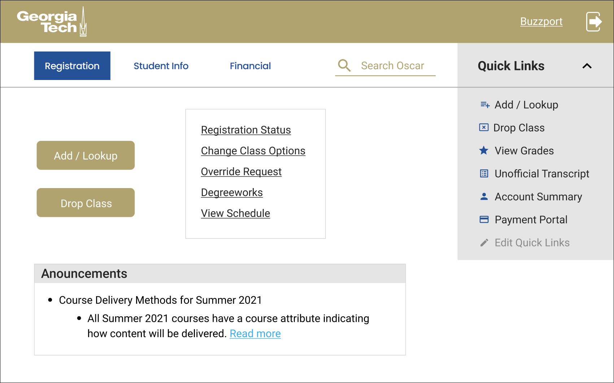
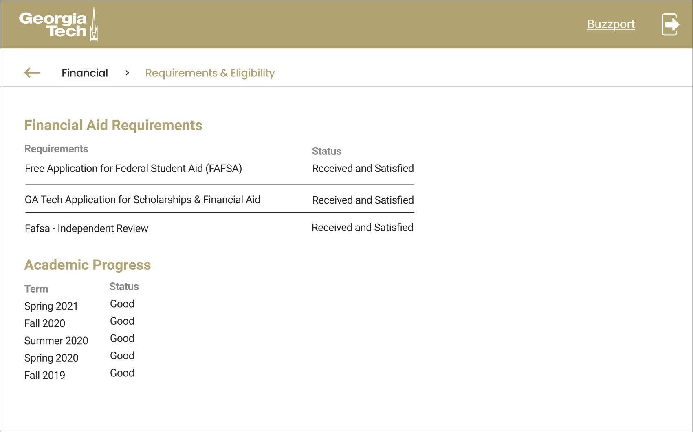
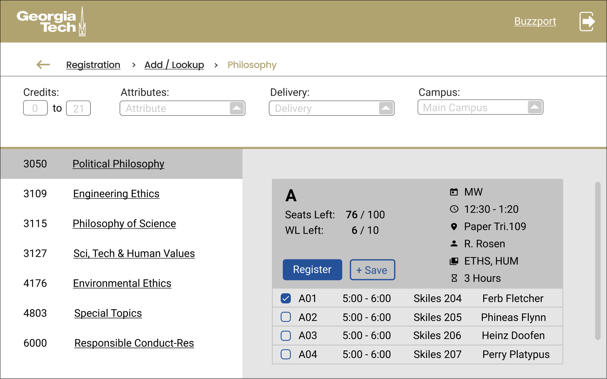

Timeline: Feb 2 - April 6 (8 weeks)
Role: Research / Prototyping
OSCAR is Georgia Tech's web access system. It's a central location where students go to register for classes and access important information like grades and financial aid. Although it's such a necessary website, many students who use it find it to be a frustrating and slow experience. This case study aimed to address this problems and find an optimal redesign that students would find visually appealing and intuitive to use.
To get broad view of the student body, we sent Google Forms to GT students with 12 questions, their styles varying rating scales, multiple choice, and short answer. The focus of the questions consisted of satisfaction, primary device, frequency of use, primary uses, time spent in a session, and frustrations while using the app.
For more in depth conversations, we spoke with six fellow students, ranging from first to third year students. We gave them tasks to navigate to a page and observed their experience in doing so. Questions focused on what features they found useful / problematic and what features they believe are missing. They were able to express their general thoughts about the user interface and any specific difficulties they faced while using the website.
We combined student opinions from both the surveys and interviews into an affinity map. From there, we were able to visualize the findings and group sentiments and find general patterns.
Most students complained about the outdated and cluttered look of the website with its dense sentences and excessive links. The UI is not intuitive and is overwhelming for first-time users. Design recommendation: Make the UI more modern, less cluttered, and include more visual cues such as icons.
The categories and labels for many links and tabs were not helpful. There are too many clicks to get to a desired page. Students do not want to read the descriptions so they resort to going down a trail of random links until they find what they're looking for. During the process, there's no buttons to go back or see the current location in relation to the rest of the website. Design recommendation: Consolidate similar pages into one link, omit repeated links and information, reduce the number of clicks it takes to get to a page.
There's no way to tell what information is important since all text is the same weight. Many students couldn't even tell there was a search bar. Many students found the grouping of links and labels to be unhelpful and confusing. Design recommendation: prioritize frequently used / important links, group and label sections better.
There are excessive dropdown menus to find classes. They have to copy down a course number and navigate back and type that number in to register from a class. A majority of students had issues with this cumbersome process. Information about classes was also cluttered and hard to read. Design recommendation: Combine searching and registering for classes, improve visual communication of class information.
